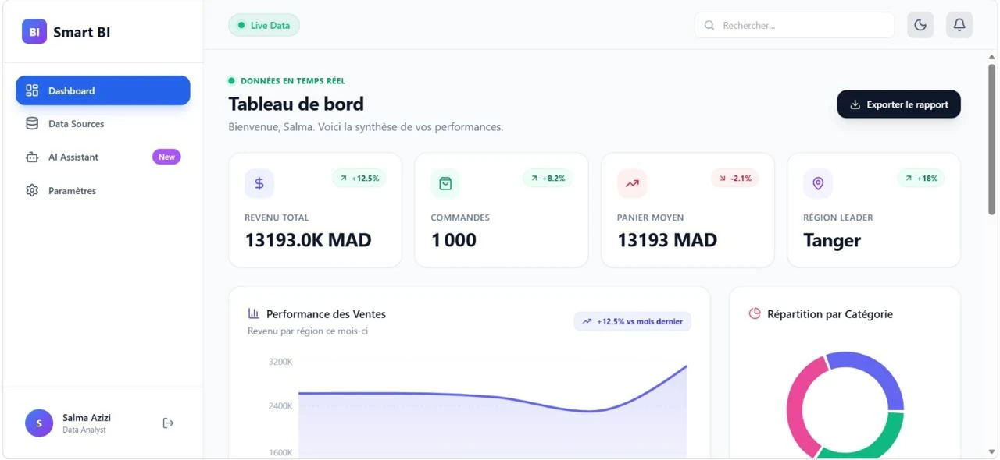
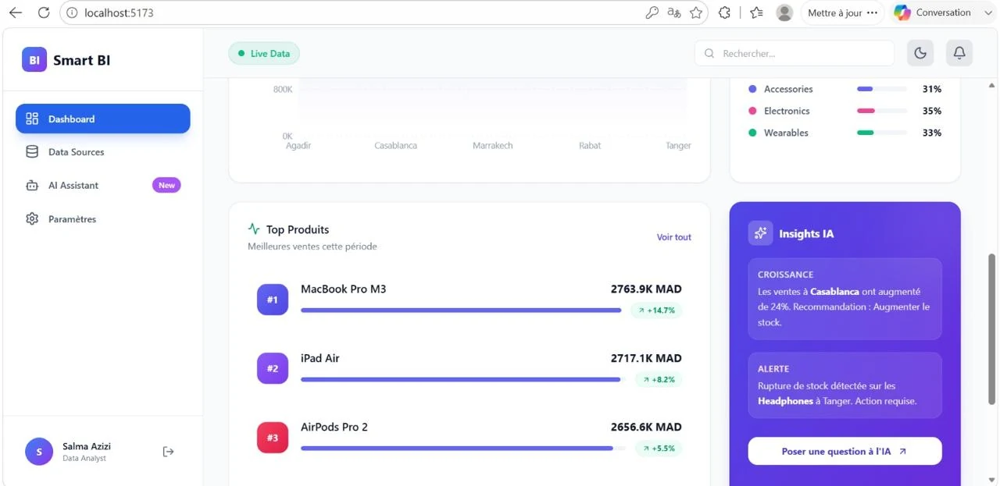
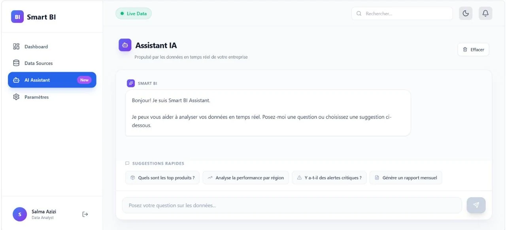

Importer ses données
Charger des fichiers CSV, Excel et JSON dans l’application.
Application web d’analyse et de visualisation qui permet d’importer des fichiers CSV, Excel et JSON, de suivre des indicateurs clés et d’explorer les données avec des tableaux de bord interactifs et un assistant analytique.

Charger des fichiers CSV, Excel et JSON dans l’application.
Traiter les données avec Python, Pandas et NumPy.
Calculer et consulter les indicateurs clés de performance.
Explorer graphiques et tableaux de bord interactifs.
Assistant analytique conversationnel fondé sur des règles et des traitements Pandas.
Exporter des rapports au format CSV et gérer profil et préférences.
Rendre l’exploration de données accessible dans un même espace : l’utilisateur importe ses fichiers, suit ses indicateurs et découvre des éléments utiles à partir de ses propres données.

